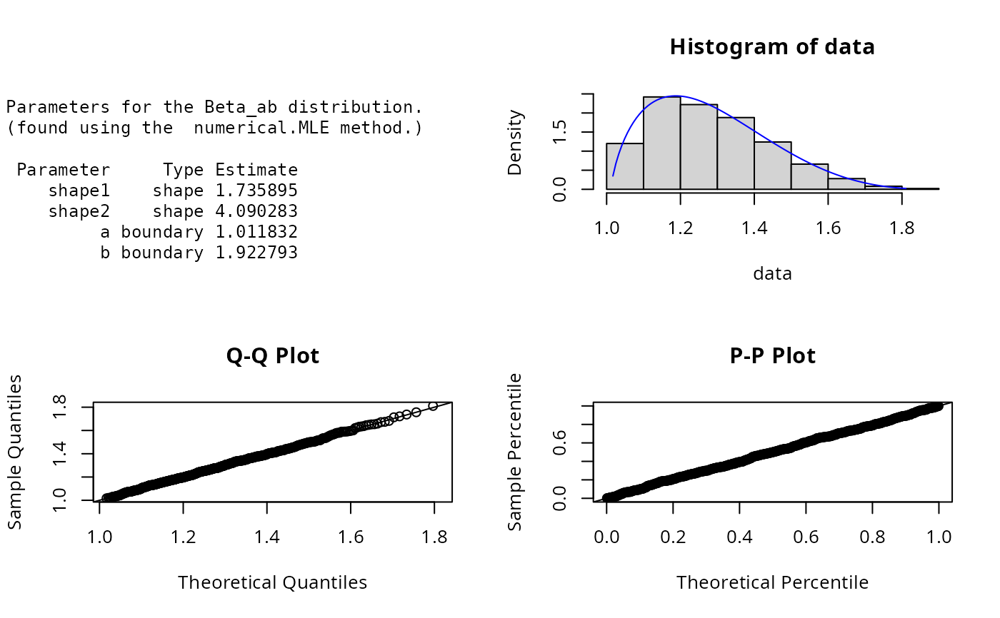

Beta_ab.RdDensity, distribution, quantile, random number generation, and parameter estimation functions for the 4-parameter beta distribution. Parameter estimation can be based on a weighted or unweighted i.i.d sample and can be performed numerically.
dBeta_ab( x, shape1 = 2, shape2 = 3, a = 0, b = 1, params = list(shape1, shape2, a, b), ... ) pBeta_ab( q, shape1 = 2, shape2 = 3, a = 0, b = 1, params = list(shape1 = 2, shape2 = 5, a = 0, b = 1), ... ) qBeta_ab( p, shape1 = 2, shape2 = 3, a = 0, b = 1, params = list(shape1 = 2, shape2 = 5, a = 0, b = 1), ... ) rBeta_ab( n, shape1 = 2, shape2 = 3, a = 0, b = 1, params = list(shape1, shape2, a, b), ... ) eBeta_ab(X, w, method = "numerical.MLE", ...) lBeta_ab( X, w, shape1 = 2, shape2 = 3, a = 0, b = 1, params = list(shape1, shape2, a, b), logL = TRUE, ... ) sBeta_ab( X, w, shape1 = 2, shape2 = 3, a = 0, b = 1, params = list(shape1, shape2, a, b), ... )
| x, q | A vector of quantiles. |
|---|---|
| shape1, shape2 | Shape parameters. |
| a, b | Boundary parameters. |
| params | A list that includes all named parameters. |
| ... | Additional parameters. |
| p | A vector of probabilities. |
| n | Number of observations. |
| X | Sample observations. |
| w | An optional vector of sample weights. |
| method | Parameter estimation method. |
| logL | logical; if TRUE, lBeta_ab gives the log-likelihood, otherwise the likelihood is given. |
dBeta_ab gives the density, pBeta_ab the distribution function, qBeta_ab the quantile function, rBeta_ab generates random deviates, and eBeta_ab estimates the parameters. lBeta_ab provides the log-likelihood function, sBeta_ab the observed score function and iBeta_ab the observed information matrix.
The dBeta_ab(), pBeta_ab(), qBeta_ab(),and rBeta_ab() functions serve as wrappers of the standard
dbeta, pbeta, qbeta and rbeta functions
in the stats package.They allow for the parameters to be declared not only as
individual numerical values, but also as a list so parameter estimation can be carried out.
The four-parameter beta distribution with parameters shape1=p, shape2=q, a = \(a\) and b=\(b\)
has probability density function
$$f(x) = \frac{1}{B(p,q)} \frac{(x-a)^{(p-1)})(b-x)^{(q-1)}}{((b-a)^{(p+q-1)}))}$$
with \(p >0\), \(q > 0\), \(a \leq x \leq b\) and where B is the beta function, Johnson et.al (p.210).
The log-likelihood function of the four-parameter beta distribution is
$$l(p,q,a,b| x) = -ln B(p,q) + ((p-1) ln (x-a) + (q-1) ln (b-x)) - (p + q -1) ln (b-a).$$
Johnson et.al (p.226) provides the Fisher's information matrix of the four-parameter beta distribution in
the regular case where \(p,q > 2\).
Johnson, N. L., Kotz, S. and Balakrishnan, N. (1995) Continuous Univariate Distributions,
volume 2, chapter 25, Wiley, New York.
Bury, K. (1999) Statistical Distributions in Engineering, Chapter 14, pp.261-262,
Cambridge University Press.
ExtDist for other standard distributions.
Haizhen Wu and A. Jonathan R. Godfrey
Updates and bug fixes by Sarah Pirikahu.
# Parameter estimation for a distribution with known shape parameters X <- rBeta_ab(n=500, shape1=2, shape2=5, a=1, b=2) est.par <- eBeta_ab(X); est.par#> #> Parameters for the Beta_ab distribution. #> (found using the numerical.MLE method.) #> #> Parameter Type Estimate #> shape1 shape 1.735895 #> shape2 shape 4.090283 #> a boundary 1.011832 #> b boundary 1.922793 #> #># Fitted density curve and histogram den.x <- seq(min(X),max(X),length=100) den.y <- dBeta_ab(den.x,params = est.par) hist(X, breaks=10, probability=TRUE, ylim = c(0,1.1*max(den.y)))#> $a #> [1] 1.011832 #> #> $b #> [1] 1.922793 #>#> $shape1 #> [1] 1.735895 #> #> $shape2 #> [1] 4.090283 #># Parameter Estimation for a distribution with unknown shape parameters # Example from: Bury(1999) pp.261-262, parameter estimates as given by Bury are # shape1 = 4.088, shape2 = 10.417, a = 1.279 and b = 2.407. # The log-likelihood for this data and Bury's parameter estimates is 8.598672. data <- c(1.73, 1.5, 1.56, 1.89, 1.54, 1.68, 1.39, 1.64, 1.49, 1.43, 1.68, 1.61, 1.62) est.par <- eBeta_ab(X=data, method="numerical.MLE");est.par#> #> Parameters for the Beta_ab distribution. #> (found using the numerical.MLE method.) #> #> Parameter Type Estimate #> shape1 shape 1.000000 #> shape2 shape 1.554651 #> a boundary 1.390000 #> b boundary 1.922278 #> #># Estimates calculated by eBeta_ab differ from those given by Bury(1999). # However, eBeta_ab's parameter estimates appear to be an improvement, due to a larger # log-likelihood of 9.295922 (as given by lBeta_ab below). # log-likelihood and score functions lBeta_ab(data,param = est.par)#> [1] 9.295922sBeta_ab(data,param = est.par)#> shape1 shape2 a b #> -1.867808e+01 -2.761779e-05 2.034795e+01 3.820329e-04